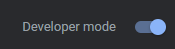
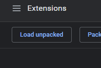
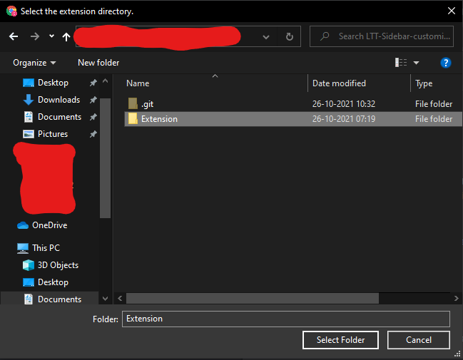

Download the .zip folder for the extension by clicking
here.
Extract the files and open your Chrome-based browser (Google Chrome, Edge, Brave) and in the address bar type in
chrome://extensions
In the top-right corner you'll see a little flip-switch labeled "Developer Mode"

In the top-left corner click "Load unpacked".

In the selection menu, open the extracted LTT-Sidebar-customizer folder and select the
"Extensions" folder contained inside.

You can now pin this to your address bar and use to change your options via the context menu.